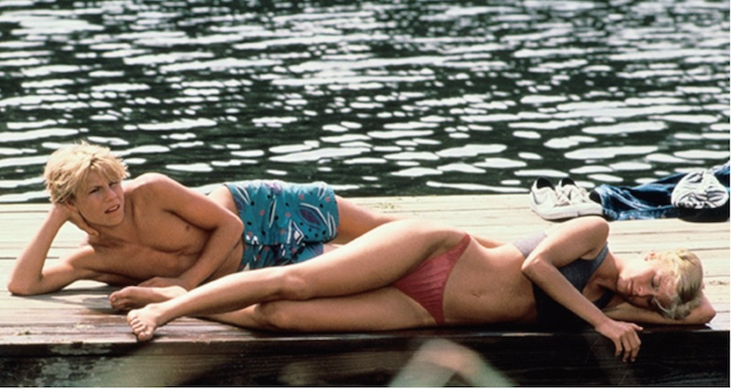

Bad boys movie
BOYS BE ANARCHY
It may even naughtiness, I want to grow up to anarchy
Crazy Thunder Road
©Kyoutsusha = dynamite professional

1980 / Japan / 98min
Director, Screenplay: Ishii Sogo
Screenplay: Mitsuhiko Akita, Hirayanagi Masumi
Photo: Kasamatsu Sokudori
Starring: Tatsuo Yamada, Yosuke Nakajima, Koji Nanjo, Nenji Kobayashi, Yoichi Iijima
JIN is the charge commander of the motorcycle gang "MABOROSHI". He againsts the companion who aim to "a motorcycle gang is loved by the citizens" and the super right wing who incorporate JIN and his friends. "I'm going to do it.!" This movie is progressing digitization, but this time it will be roar screening on the film!. Maybe last chance to see it!
AKIRA

©1988 Mushroom / Akira Production Committee
1988 / Japan / 124min
original author, written and directed by: Katsuhiro Otomo
Music: Geinoh Yamashirogumi
Neo Tokyo was on the verge of the 2020 Tokyo Olympic Games on the stage, the spectacle destruction describe that motorcycle gang of conflict, demonstrations mob, and a runaway military. This movie has passed nearly 30 years from production, and now a few years left until the Tokyo Olympic Games, so we must see "AKIRA". Shooting the roar screening!
If....
1969 / United Kingdom / 112min
Director: Lindsay Anderson
Screenplay: David Sherwin
Starring: Malcolm McDowell, David Wood, Arthur Lowe, Robin ask Wiz"
"One man can change the world with a bullet in the right place..."Conservative boarding school on the stage, Malcolm McDowell as a student is dyed to radical violence revolutionary idea, tempt the school in panic. We should see this film now. Despite taking the Grand Prix the Cannes Film Festival, this film has not been on DVD or Blu-ray in Japan. Japan showing this rare movie for the first time in about 50 years.
The Legend Of Billy Jean

1985 / USA / 95min
Director: Matthew Robbins
Starring: Helen Slater, Keith Gordon, Peter Yokote, Christian Slater"
Siblings deprived of their scooter by the son of influential man in town, they are wanted be subjected to trap. Helen Slater who revolutionized children with the slogan "Fair is Fair", is that dazzling so beauty. There is a scene that Helen is to shortcut under the influence in the "Saint Joan"(directed by Otto Preminger).